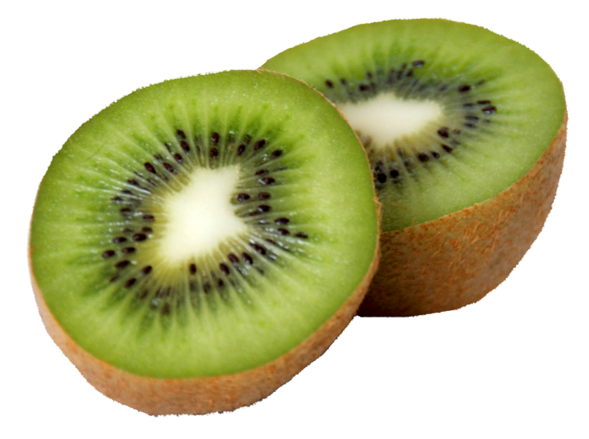

Kiwifruit
22 Aug 2018 - Ted Doe
Kiwifruit (often abbreviated as kiwi), or Chinese gooseberry is the edible berry of several species of woody vines in the genus Actinidia.
The most common cultivar group of kiwifruit is oval, about the size of a large hen’s egg (5–8 cm (2.0–3.1 in) in length and 4.5–5.5 cm (1.8–2.2 in) in diameter). It has a fibrous, dull greenish-brown skin and bright green or golden flesh with rows of tiny, black, edible seeds. The fruit has a soft texture, with a sweet and unique flavor.
